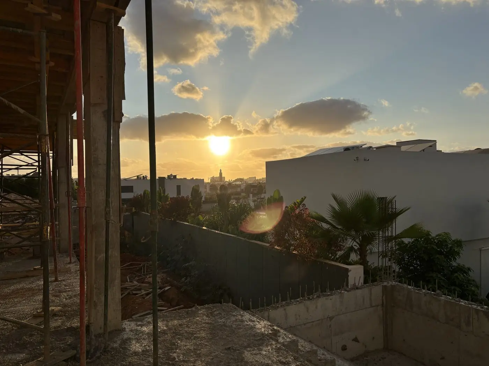
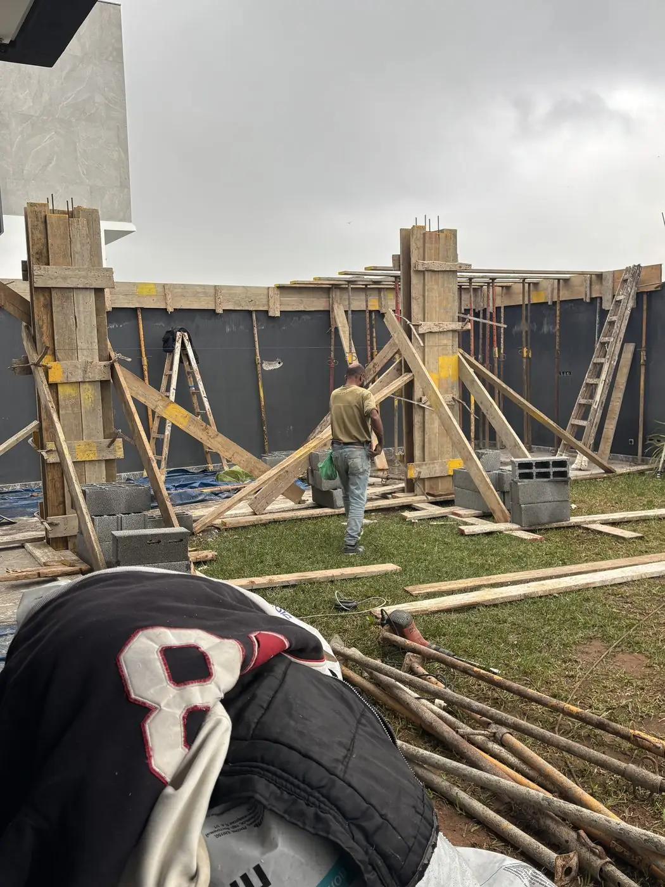
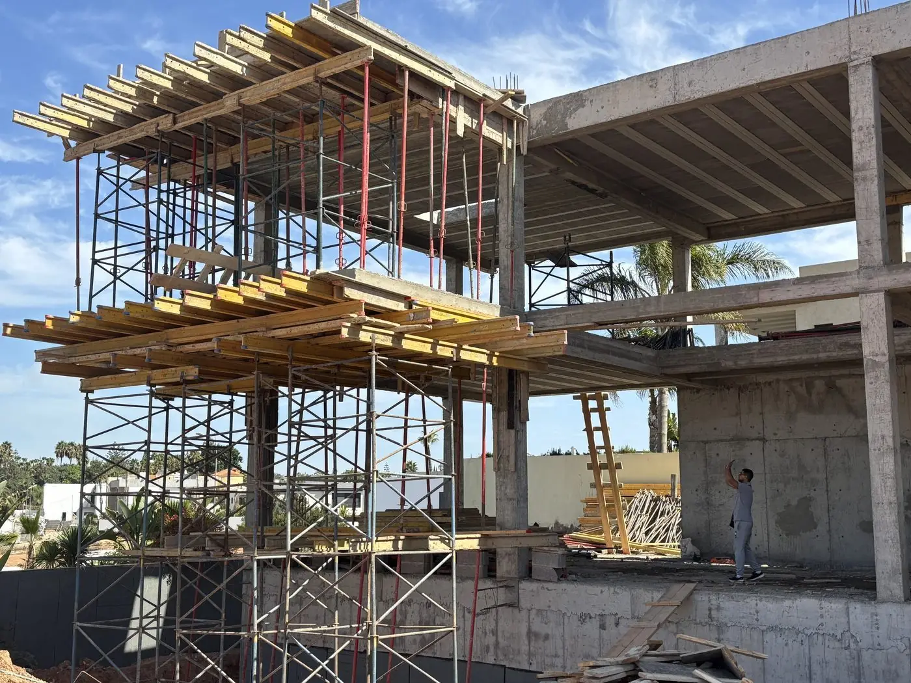
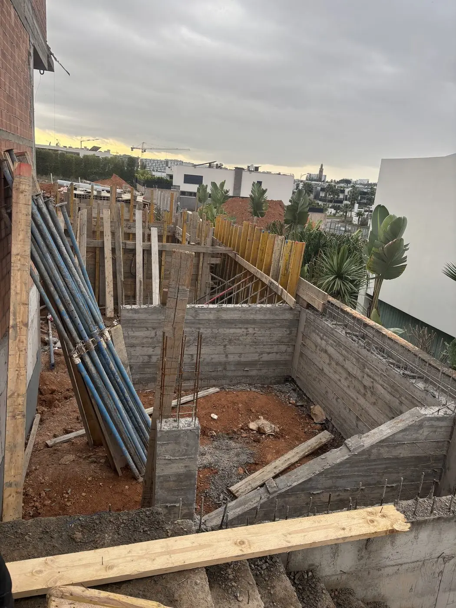
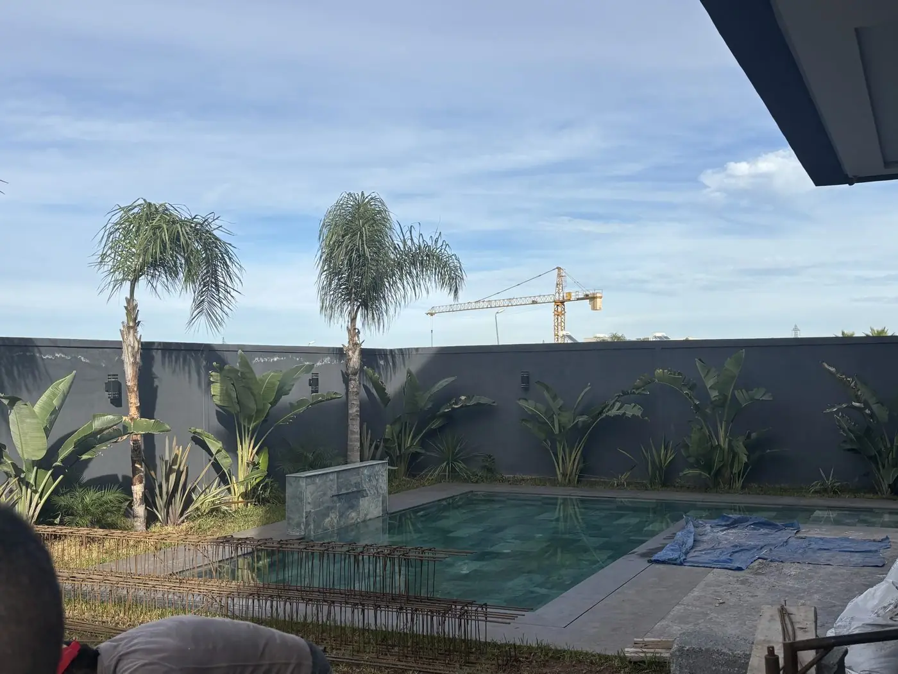

Bruxelles, Montréal, Dubaï, Lyon. Où que vous viviez, votre rapport de chantier arrive chaque mardi, avant votre café du matin.
Notre premier mandat est conduit pour une famille de la diaspora attachée à sa discrétion. Plutôt qu'un témoignage mis en scène, nous préférons la transparence du processus : un échange direct avec les deux fondateurs dès le premier contact, et chaque semaine, les preuves tangibles de l'avancement.
16 photos datées et géolocalisées, avancement par lot. Sur votre téléphone, avant votre café du matin.
Votre capital n'entre jamais dans les comptes ZAF BAT. Aucun décaissement sans votre signature électronique.
Chaque livraison certifiée : permis d'habiter délivré par la Commune, responsabilité décennale (art. 769 DOC) et assurance RCD (Loi 59-13) actives dix ans.




Rapport du mardi — votre villa
Gros œuvre : avancement conforme au planning. 16 photos datées, PV signé.
Séquestre : aucun décaissement sans votre signature.
Avant votre café, où que vous soyez. — exemple illustratif
Partage d'écran : rapport du mardi, solde séquestre, planning. Compte-rendu écrit sous 24 h. — exemple illustratif
Quelque part dans la diasporaMardi, 7h40, Bruxelles. Il pleut sur les vitres du tram. Sur votre écran : seize photos au soleil — les murs du salon ont pris un étage. Vous rangez le téléphone. La journée peut commencer.
À 3 000 kilomètres, votre demeure s'élève
sous vos yeux.
Premier échange privé avec un co-fondateur. Sous 48 heures, sans engagement.